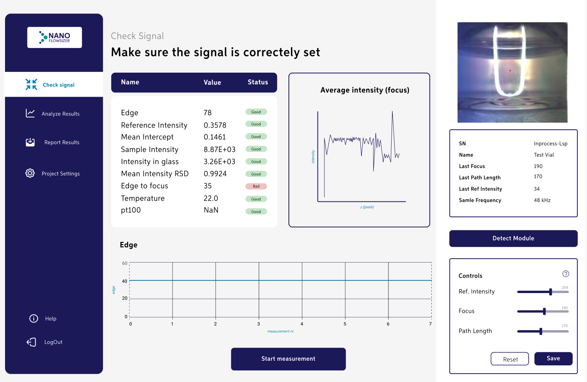
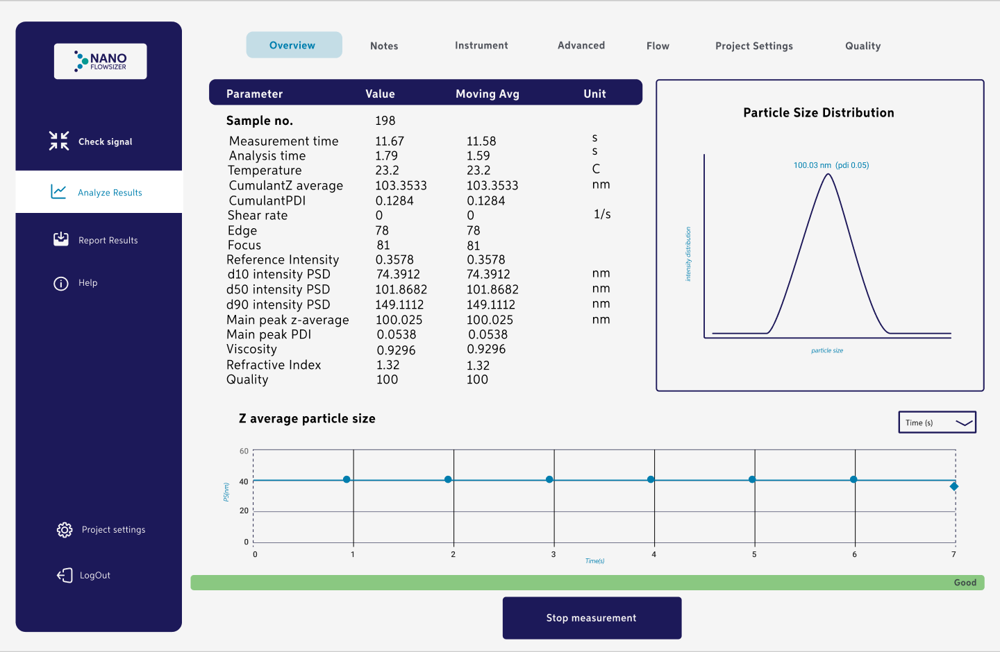
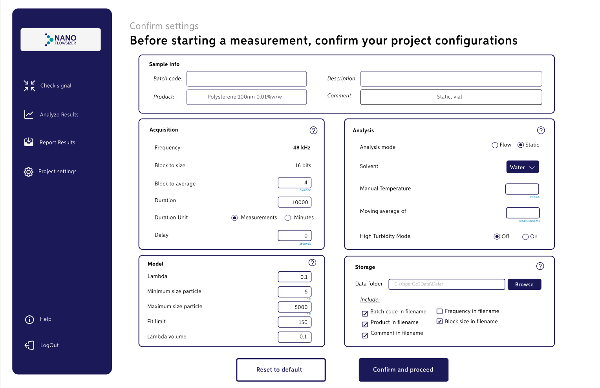

NFS Web Interface
Providing Product Demo for potential customers

UX/UI Designer & Front-End Developer
Duration:
September 2022 - January 2023
Context
Imagine the last time you got a sample at a perfume store or even a
try- out cut cheese at your local market. All of these are slightly
familiar to a lot of us and usually bring great memories of the few
times we get to have something “for free” in this expensive world.
Whether the goal is to raise brand awareness, persuade people to
purchase, or simply be kind to strangers, many companies have seen a
huge impact and benefit in giving proof of how their products work
without saying a lot about it. Instead, having people build their own
opinion.
During my internship at InProcess-LSP, I was challenged to come up
with a website that will be used as a demo to people interested in the
NFS (NanoFlowSizer).
What's the problem?
The NanoFlowSizer is a device that is used to measure the size of
small particles, impacting different industries. Customers of this
product are located all over the world, limiting its promotion to
mainly events and conferences they participate. Which, obviously,
hinders potential customers from fully grasping the product's
capabilities and value.
Work process
Research Question:
“How might we demonstrate the functionalities of the NFS on a web interface to users? ”
Approach used
Early on my internship, I knew the goal of the project- to build a website hosting a demo of the NFS. However, the “know-how” was still lacking. Thereafter, using the Design Thinking Approach I was able to not only prioritize human-centred design but also focus on problem-solving.
Talking with people...
Backed up by the question:
“What is the NFS and what are the key features the product
offers?”
I focused in building empathy towards users.
The main objective was not necessarily answering the question
initially prompted but, expanding my perspective and setting aside
any assumptions I initially had.
Through conducting
interviews, reading documents, and observation sessions, I was able
to collect insightful data (such as user needs, current customer
journey, expectations and more) and fully put myself in the user's
shoes by not only hearing what they say but also
attempting to uncover what remained unsaid.
What did people say?
The results of this phase can be summarized as:
- User need: Facilitated environment to understand the workings of the NFS
- Expectations: Flexible set-up to customers to increase their perception of the system by providing a simpler/self-explanatory tool for try-out.
And now?
From the research conducted, I understood that the design of my
producted needed to be simple and include the main interactions the
actual device has to offer. Thus, providing the customer with an
initial perception of the NFS without overwhelming them with complex
features.
To best visualize this, I made an Information Architecture scheme,
structurizing an ideal user flow for the product to be designed.
Designs
For the brand, I wanted to create a refreshing, minimalist and clean UI that conveyed trustworthiness and simplicity.


To conclude...
The purpose of this internship was to create a web interface for the
current NFS, sold at InProcess-LSP. Through research and analysis
conveyed I was able to understand what makes a demo appealing to
people- mainly the fact that they get the proof a certain product
works.
Followed by a high-fidelity design implementation I concluded the
relevance of creating interactive products that increase the user
experience, by facilitating the way they will navigate my website-
ensuring clear communication, and comprehensive and intuitive UI. This
project will serve as the foundation for further web development on
the basis of creating a great environment to be used in marketing,
product demos, and more.